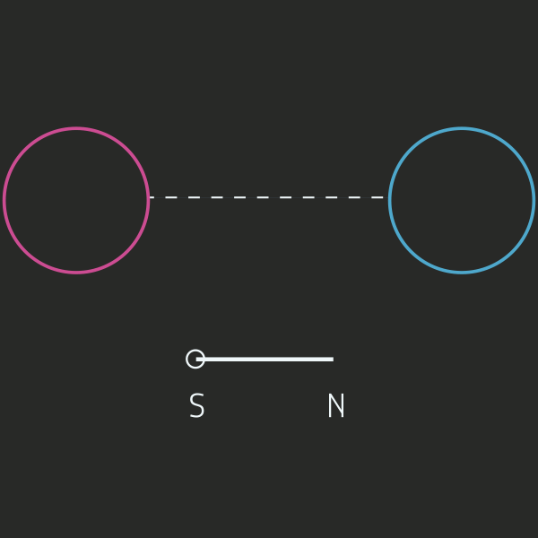
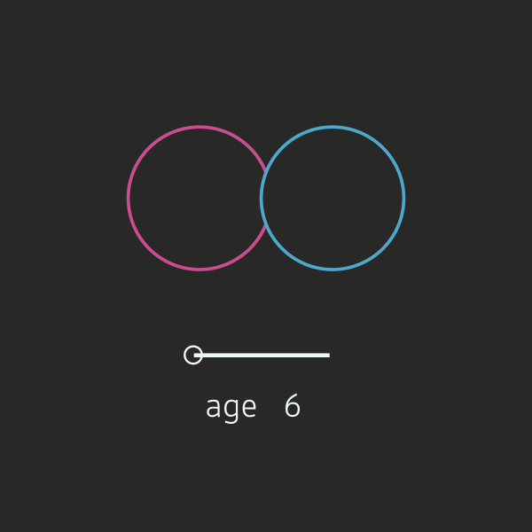
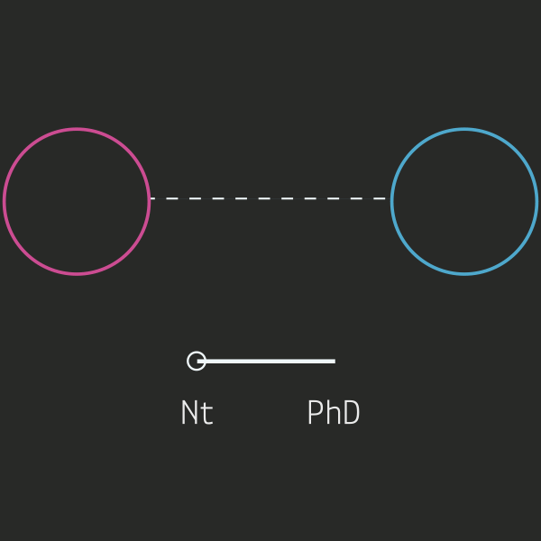
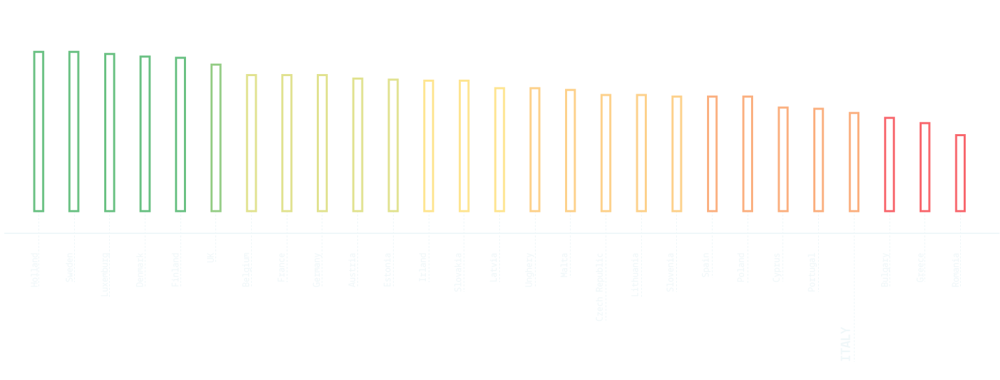

Men vs. Women
> Generally, men are more digitally literate than women, independently of the geographic position. As you can see in the following images, a higher level of education decreases the gap while age increases it.



A European overview
> What our analyse highlights and confirms is a huge gap in the Italian population. We can’t tell what the causes of the digital literacy void in Italy are, but what we are sure about is that Italy still doesn’t fit in a digital European scenery, appearing to be the third to last country in the Digital Literate European Countries Classification.

project by
- Nicolò Arena
- Claudio Fabbro
- Alessandro Malcotti
- Marta Mandile
- Anita Righetto
Faculty
- Paolo Ciuccarelli
- Marco Fattore
- Stefano Mandato
- Donato Ricci
- Salvatore Zingale
Teaching Assistants
- Matteo Azzi
- Daniele Ciminieri
- Michele Mauri
- Azzurra Pini
- Giorgio Uboldi